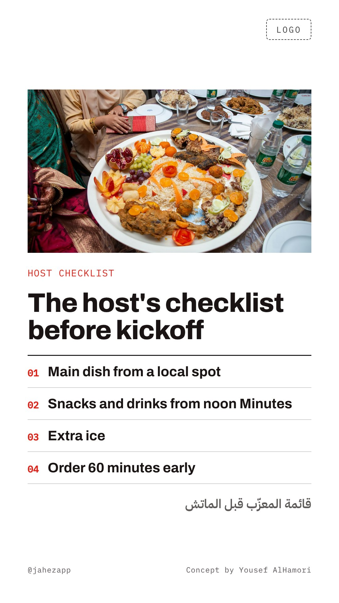
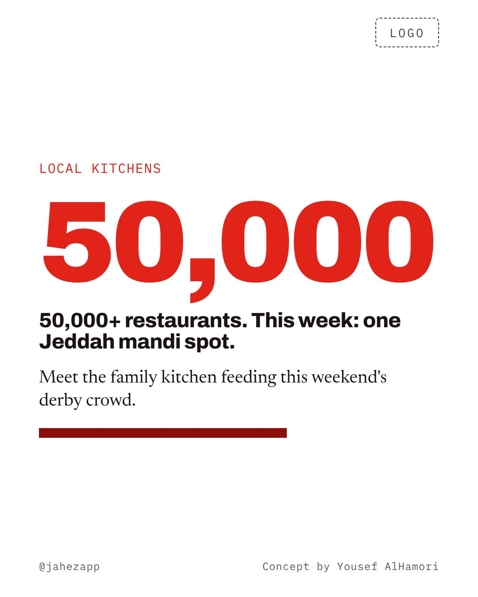

لا تفوتك أول دقيقة. اطلب العشا والسناكات من جاهز قبل صافرة البداية. #سفرة_الماتش #جاهز #دوري_روشن
How It Works pillar. Explains the noon tie up through a real match night order.
Jahez can own matchday at home: one app for the food, the snacks and everyone watching.
Matchday Spread is a weekly series built around Roshn Saudi League match nights, when friends gather and order in. It shows restaurant meals and noon Minutes snacks side by side in Jahez, so the noon tie up is explained through use. Each week it also spotlights a local partner restaurant in one city.
Unsolicited concept for portfolio purposes. I am not affiliated with Jahez; its name and trademarks belong to the brand. Facts in the audit come from the public sources listed at the bottom. Targets are proposed, not actual results.
Three posts from the campaign, each with the caption as it would go out and the job it does. The dashed LOGO box marks where the brand's logo would sit. Photos are free stock images from Unsplash, standing in for a real shoot.


What the brand already does well on social, and the openings this plan goes after.
Proposed target: 15% more first time noon Minutes orders inside Jahez on match nights over half a season, tracked with a campaign code.
People aged 18 to 35 who watch Roshn Saudi League matches with friends and order food before kickoff.
The host of a match night never sees the first ten minutes, because they are still sorting out the food.
Proposed target: 15% more first time noon Minutes orders inside Jahez on match nights over half a season, tracked with a campaign code.
Order guides before kickoff and halftime content built around each big fixture.
Short explainers on noon Minutes inside Jahez and Jahez inside noon.
Spotlights on partner restaurants, one city and one dish at a time.
Community causes such as health awareness, told through riders and partners.
| Platform | Role | Cadence |
|---|---|---|
| TikTok | Matchday sketches and fast how to explainers | 4 per week |
| X | Live match reactions in Arabic and order prompts before kickoff | Every match day |
| Restaurant spotlights as Reels and carousels, Stories with polls | 3 per week plus match day Stories | |
| Snapchat | Matchday lenses and Story ads before kickoff | 2 per week |
The second half of the 2026 to 27 Roshn Saudi League season, when title races and derbies bring the biggest home gatherings.
Every big Roshn Saudi League weekend, Jahez builds the ideal match night spread from one city's partner restaurants and noon Minutes snacks. The content shows the host ordering everything before kickoff, so for once they see the first ten minutes.
How it spreadsFans post their own match night spread with #سفرة_الماتش and tag the friend who always orders late. Each week one group wins their next match night order, and the restaurant they ordered from gets featured.
| Time | Visual | Audio / text |
|---|---|---|
| 0 to 3s | Living room, friends shouting at the TV. The host is in the kitchen on the phone, missing it. | Crowd roar from the TV. On screen text: Minute 1. Where is the host? |
| 3 to 8s | Close up of the host's stressed face, scrolling between three apps. | VO, friend: وينك؟ الماتش بدأ! |
| 8 to 13s | Rewind effect to an hour earlier. The same host opens Jahez, adds a mandi tray from a local restaurant, then chips and drinks from noon Minutes. | Rewind sound. On screen text: Kickoff minus 60 |
| 13 to 19s | A Jahez rider arrives at the door. Food and snacks land on the floor spread. | Doorbell, upbeat beat |
| 19 to 25s | The host is on the sofa with friends as a goal goes in. Everyone jumps. | Crowd roar. VO: قووووول |
| 25 to 30s | Top shot of the full spread with the Jahez app open on a phone in the middle. | VO: كل اللي تحتاجه اللمة، في جاهز. End card: #سفرة_الماتش |
A two week calendar, the creators I would brief, and how the account answers people in the comments.
| Day | Platform | Format | Pillar | Post |
|---|---|---|---|---|
| W1 Sun | TikTok | Reel | Matchday Spread | The host never sees kickoff |
| W1 Mon | Reel | Local Kitchens | Jeddah mandi kitchen spotlight | |
| W1 Tue | TikTok | Reel | How It Works | noon Minutes inside Jahez in 20 seconds |
| W1 Wed | X | Live posts | Matchday Spread | Order reminder before kickoff, then live reactions |
| W1 Thu | Snapchat | Lens | Matchday Spread | Build your match night spread lens |
| W2 Sun | Story | How It Works | Poll: one app or two for match night? | |
| W2 Mon | TikTok | Reel | Local Kitchens | Riyadh shawarma spot at rush hour |
| W2 Tue | Carousel | Jahez Cares | Customer thank you notes to riders | |
| W2 Wed | TikTok | Reel | Matchday Spread | Fan spreads from #سفرة_الماتش |
| W2 Thu | X | Thread | Matchday Spread | Winning group announced for derby night |
| Tier | Creator type | Why them | The ask |
|---|---|---|---|
| Micro (10k to 50k) | Local football fan accounts that film watch parties | Their content is already the living room on match night. | 1 TikTok of their watch party order plus live X posts during one match |
| Mid (50k to 250k) | Local comedy sketch creators | The host who misses kickoff is a character their audience already knows. | 2 matchday sketches using the Matchday Spread script |
| Micro (10k to 50k) | City food reviewers in Riyadh, Jeddah and Dammam | They give partner restaurant spotlights a local voice. | 1 Reel per month on a Jahez partner restaurant and its best match night dish |
Proposed targets and the tests that would tell us what to change after week one.
| Metric | Target | Why it matters |
|---|---|---|
| noon Minutes orders with the campaign code | Target: 15% lift on match nights | Ties content to the noon partnership and to real orders. |
| #سفرة_الماتش posts | Target: 5,000 over half a season | Shows fans are hosting with Jahez and sharing it. |
| Story poll taps on match days | Target: 8% of Story views | Signals attention in the hour before kickoff, when ordering decisions happen. |
| Saves on restaurant spotlights | Target: 3% of reach | Saves mean people plan to order from that kitchen. |
Each major choice in this plan, matched to published research. Some studies cover the wider region or global audiences; the source says which. Full list on the research page.
86% of Saudi respondents say they are likely to order food more often during the 2026 World Cup, and 52% plan to watch at a friend's or relative's house.
Most fans in Saudi Arabia say they order food more often around big matches, so match night is when Jahez is most needed.
Ipsos, 2026 World Cup Survey: Saudi Arabia Edition (500 adults), 202688% of Saudi football fans aged 18 to 34 say who they watch with is important, and 74% expect their group chats to stay active through a tournament.
Fans care who they watch with and stay active in group chats, so tagging a friend spreads the post through the people already gathering.
The Brand Berries, reporting Snapchat research conducted by OnePoll, 202673% of social users say they will buy from a competitor if a brand does not respond on social, and nearly three quarters expect a response within 24 hours or sooner.
Fans who message during a match expect a fast reply, and a slow one can send an order to a competitor.
Sprout Social, The 2025 Sprout Social Index: What consumers want on social, 2025TikTok ads reached 38.6 million users aged 18 and above in Saudi Arabia in late 2025, the largest ad audience of any platform in the report (ad reach, not monthly active users).
TikTok has the widest ad reach among Saudi adults, which carries match night comedy beyond existing app users.
DataReportal, Digital 2026: Saudi Arabia, 2025Do football fans order through Jahez more on match nights when the content shows a friend group's spread rather than a single dish?
4 match A/B test on TikTok and Instagram Stories: Matchday Spread group clips versus single dish clips, each with a match night promo code
8 posts across 4 Roshn Saudi League match days, promo code redemptions per variant
Matchday Spread codes are redeemed at least 35% more than single dish codes